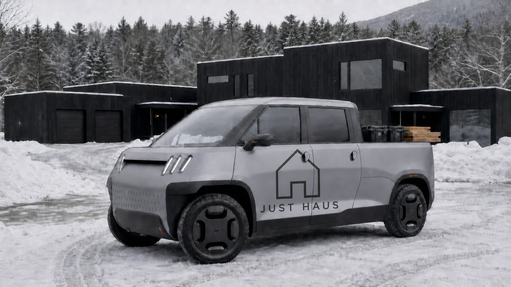
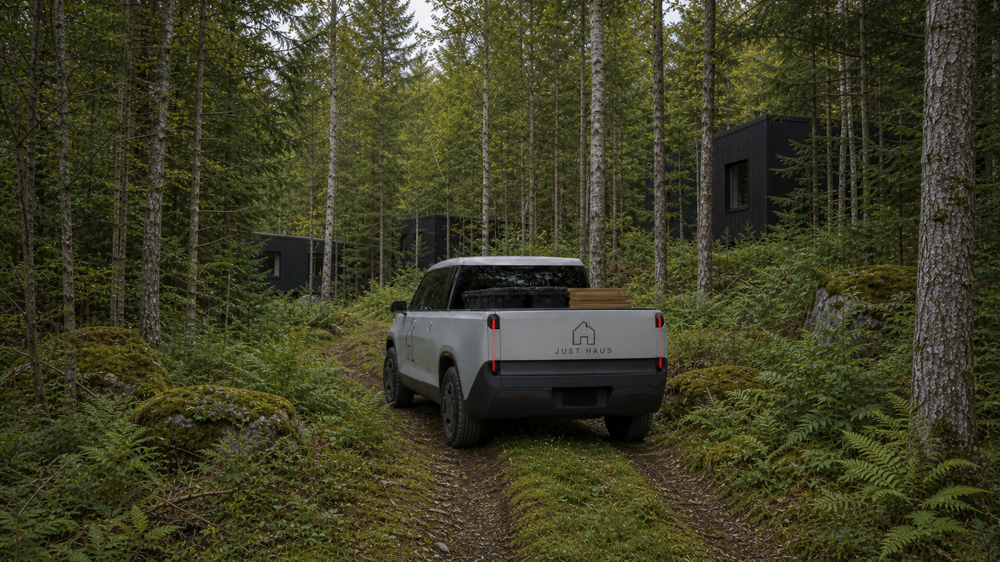

01 · Real truck work
Right-sized utility
Tools, sheet goods, materials, towing within verified ratings, supplier runs, and daily site work—not a promotional demo.
Independent · unofficial concept
Put a TELO MT1 to work on a solo-led northern build—moving real materials through tight rural sites, navigating deep winter, and testing how compact vehicle packaging can preserve more of the landscape.

Tools, sheet goods, materials, towing within verified ratings, supplier runs, and daily site work—not a promotional demo.
Smaller garages, tighter turning areas, narrower service routes, and access to places where a conventional pickup dictates the site plan.
Batteries, charging, windshield clearing, wipers, washer sprayers, handles, latches, and tailgate operation after real icing.
What compact packaging unlocks

Full-size vehicles influence road widths, turning areas, garage dimensions, grading, clearing, and hardscape. A compact electric pickup could retain useful work capability while reducing those spatial demands.
That opens a useful development model: park at the edge, then use small paths to build, service, and reach seasonal cabins or wilderness-oriented dwellings with less disturbance to the land.
There is an operating bonus: a solo-led build consolidates repeated crew travel into one solar-charged EV, reducing fuel cost and construction transport emissions. The detailed carbon scenario remains a supporting calculation, not the lead.
Why Just Haus
Just Haus offers an early commercial use case informed by engineering, building, EV-truck ownership, off-grid energy systems, and years of winter EV frustrations. It could test both the truck and the site model: construction, tight access, centralized parking, small service paths, solar charging, and winter operation.